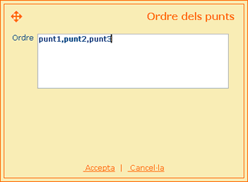

| respostes PREGUNTA D'UNIR PUNTS |
|
Com funciona? Per indicar les totes les respostes correctes de la pregunta s'ha de fer servir el control de respostes. Així, aquesta llista de respostes tindrà tantes línies com combinacions de respostes hagi. Per afegir, modificar o eliminar combinacions de respostes correctes es poden fer servir els botons que apareixen sota aquesta llista. La pantalla que es carrega en aquest moment permet indicar, en format textual, l'ordre dels punts que conformen la resposta correcta. Per tant, en el camp de text que apareix en aquesta pantalla s'hauran d'escriure en ordre, un a un i separats per comes els identificadors dels punts (o zones) que formen part de la sol·lució. |
|
Exemple A continuació es mostra un exemple de resposta de pregunta d'unir punts. Per respondre correctament aquesta pregunta caldrà marcar en primer lloc el 'punt1', en segon el 'punt2' i en tercer el 'punt3'.  |